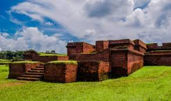
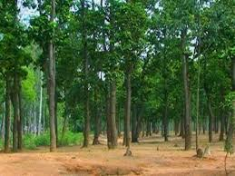
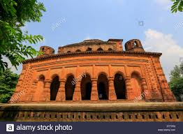

Location: Mainamati, Comilla District, Chittagong Division, Bangladesh.
Coordinates: 230, 26 N 9108 E/23.4330N 91.1330E coordinates.
Type: Sanctuary.
Shalban Vihara in Mainamati, Comilla, Bangladesh is one of the best known Buddhist Viharas inthe Indian Subcontinent and is one of the most important archaeological sites in the country. Atthe end of the 8th Century, king Shri Bhavadeva made the “Salban Vihara” in this place. Thedigging started from 80th decades (Clarification needed). Many archaeological elements areafound here. Most of them are kept in the Mainamati Museum now.
Etymology: Originally, the monastery was called Bhavadev Bihar after the king, but today theShalban name comes from a grave of Shal (Shorea robusta) trees.
History Introduction of Shalban Vihara in both English and Bengali Language. Before 1200 yrsago the King Bhava Deva, the fourth Ruler of the early-Deva dynasty built that place on 168square meters of grand. It was royal or for the early Buddhist students. This site, previouslycalled Shalban Rajar Bari, came out after archaeological excavation as a Buddhist monastery andhence termed as Salban Vihara from the terracotta seals and copper plates discovered. Its originalname in supposed to have been Bhava Deva Mahavihara after the 4th king of the early Devadynasty which ruled this region from the mid-7th to mid-8th centuries AD. It was built in or on theoutskirts of Devaparvata, the Samatata capital bordering the Lalambi forest.
